AI 内容生成核心直接竞品
Predis.ai
打开官网 ↗ · US SMB / creators / agencies
定位：AI social content creation + scheduling：从 prompt 生成 post、video、carousel、caption、hashtag，并支持多平台排期。
价格信号：$19–$249/mo（年付入口价；低价档有 post 数限制）
它赢：内容生成成熟、自助定价清楚、SEO 和模板体系强。
它弱：更像内容工具，不是本地商家经营闭环；真实 calls/bookings/DMs attribution 弱；自动发布仍需要人工审核。
对 LocalPilot：如果 LocalPilot 只做 AI caption，会被 Predis 商品化；必须做 strategy + approval + attribution。

Scheduler / 社媒管理成熟替代品
Buffer
打开官网 ↗ · creator / small team / SMB
定位：轻量 social scheduling + analytics + AI assistant。
价格信号：Free；Essentials 通常按 channel 收费
它赢：便宜、简单、生态成熟。
它弱：不是本地增长操作员；不理解行业目标，也不追踪真实转化。
对 LocalPilot：不要和 Buffer 比 scheduler；要比老板是否不用懂营销也能持续获客。

Scheduler / 社媒管理视觉平台强竞品
Later
打开官网 ↗ · Instagram/TikTok 视觉内容团队
定位：视觉内容日历、link-in-bio、UGC、analytics。
价格信号：Starter/Growth/Scale 年付分层
它赢：Instagram/TikTok planning 很成熟。
它弱：仍然偏内容管理工具；本地商家 business outcome 弱。
对 LocalPilot：Instagram/TikTok 可以参考 Later 的视觉日历，但 LocalPilot 首要不是日历。

Scheduler / 社媒管理企业 incumbent
Hootsuite
打开官网 ↗ · mid-market / enterprise social teams
定位：多平台发布、inbox、analytics、team workflow。
价格信号：常见公开入口约 $199+/mo/user 级别
它赢：集成广、团队治理成熟。
它弱：对单店 SMB 太重太贵；没有本地转化闭环。
对 LocalPilot：Hootsuite 证明 publishing/inbox 是老市场；LocalPilot 要从 SMB operator 切入。
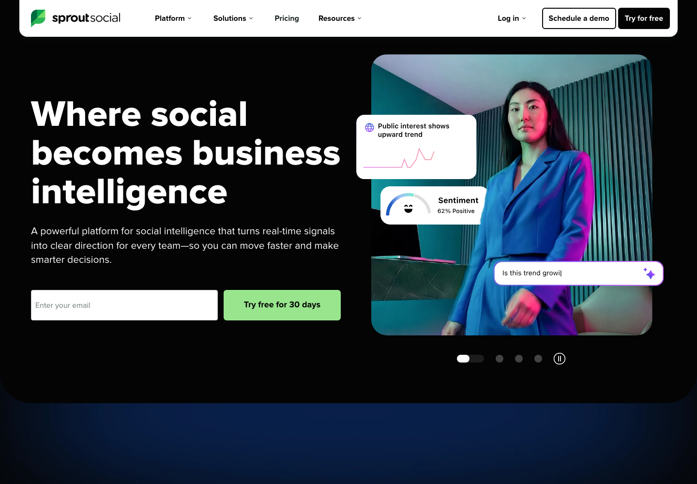
Scheduler / 社媒管理企业 analytics 标杆
Sprout Social
打开官网 ↗ · larger SMB / mid-market / enterprise
定位：社媒管理、listening、analytics、customer care。
价格信号：常见入口 $199–$249+/user/mo 级别
它赢：analytics 和企业管理强。
它弱：价格和复杂度不适合老板亲自操作的本地商家。
对 LocalPilot：长期 attribution dashboard 可参考，但 MVP 不要学它的复杂度。
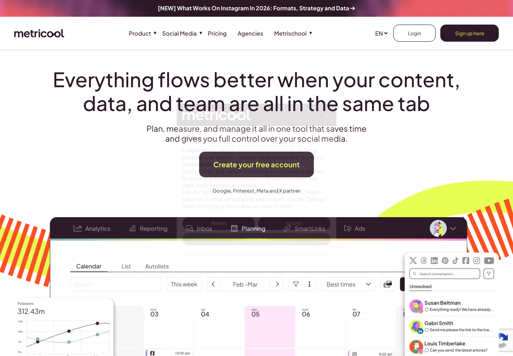
Scheduler / 社媒管理预算型替代品
Metricool
打开官网 ↗ · SMB / creators / agencies
定位：社媒排期、analytics、competitor tracking。
价格信号：Free；Starter 约 €16/mo 起
它赢：价格友好，analytics 比较完整。
它弱：工具型，不替老板决定发什么、为什么发、带来什么客户。
对 LocalPilot：competitor watcher 可参考；但 LocalPilot 要包装成业务建议。
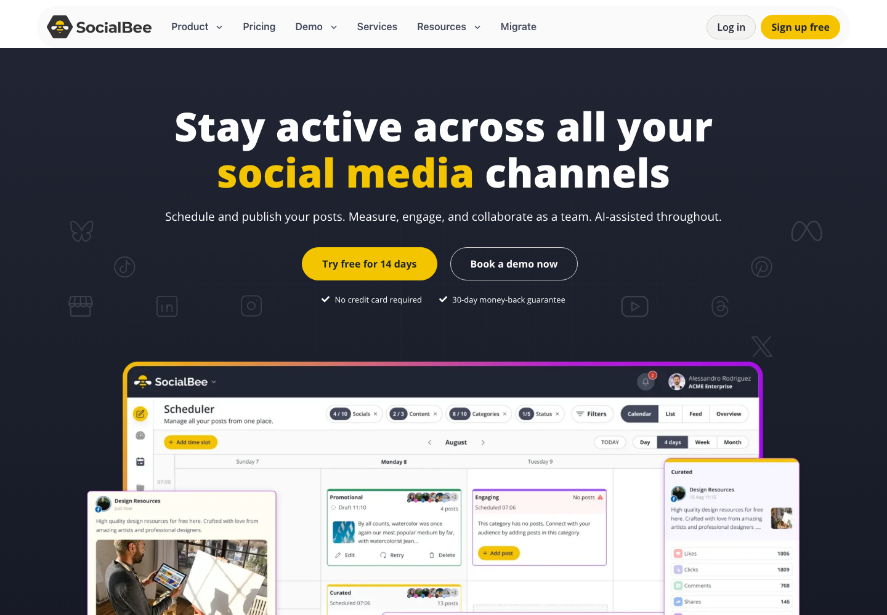
Scheduler / 社媒管理内容分类/evergreen 竞品
SocialBee
打开官网 ↗ · SMB / solopreneurs
定位：content categories、evergreen recycling、AI post generator。
价格信号：Bootstrap $29/mo，Pro $99/mo 左右
它赢：内容分类和持续排期适合小团队。
它弱：仍然没有本地真实转化学习。
对 LocalPilot：可借鉴 weekly autopilot，但加上行业策略和 attribution。
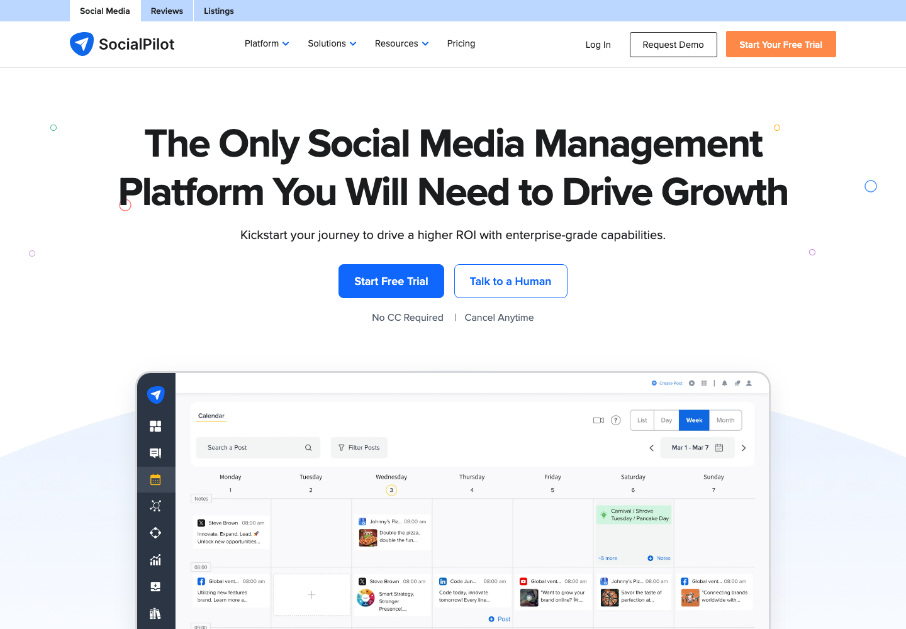
Scheduler / 社媒管理SMB/agency 竞品
SocialPilot
打开官网 ↗ · SMB / agencies
定位：排期、collaboration、analytics、client management。
价格信号：多档订阅，偏 SMB/agency
它赢：agency workflow 更成熟。
它弱：不是业务意图驱动；owner approval 对单店老板不是核心叙事。
对 LocalPilot：agency 模式后期可参考，2026 不要优先做 white-label。
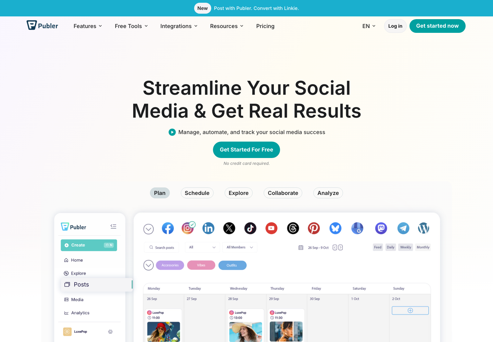
Scheduler / 社媒管理低价工具竞品
Publer
打开官网 ↗ · creators / SMB
定位：多平台 scheduling + AI assist。
价格信号：Free + paid tiers
它赢：轻量、便宜、多平台。
它弱：strategy / vertical / conversion loop 弱。
对 LocalPilot：功能表上会输赢互有；定位必须避开 scheduler 红海。
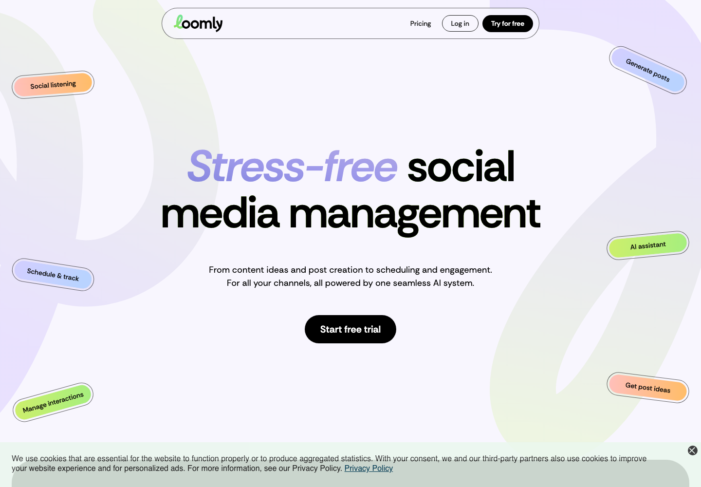
Scheduler / 社媒管理团队协作竞品
Loomly
打开官网 ↗ · marketing teams / agencies
定位：content calendar、approval、collaboration。
价格信号：Base/Standard/Advanced 分层
它赢：approval workflow 成熟。
它弱：更适合 marketer，不适合没有 marketer 的老板。
对 LocalPilot：LocalPilot 的 approval 是“老板一键放心发布”，不是 team governance。
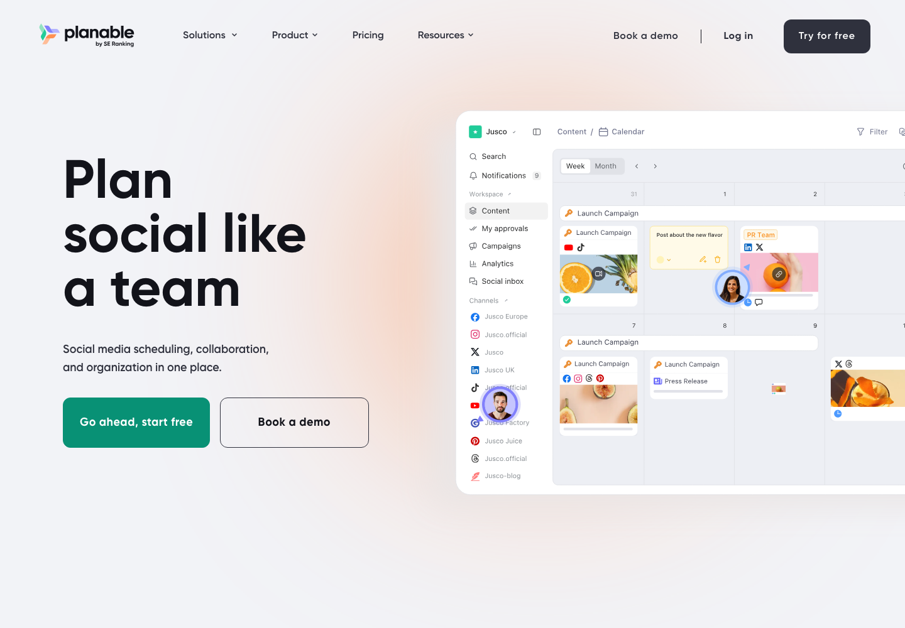
Scheduler / 社媒管理审核协作竞品
Planable
打开官网 ↗ · agencies / content teams
定位：content collaboration、review、approval。
价格信号：Free + paid workspace tiers
它赢：内容审核体验强。
它弱：不会替商家想营销策略，也不连接真实获客。
对 LocalPilot：可以学习 review UX，但 LocalPilot 要简化到老板手机可批准。
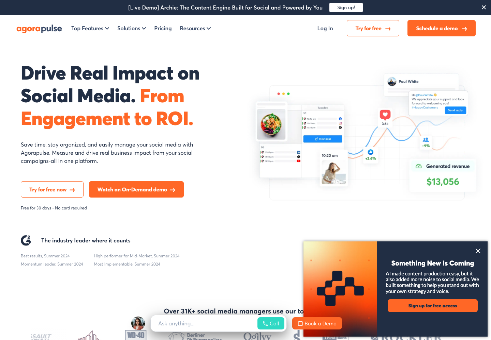
Scheduler / 社媒管理inbox/agency 竞品
Agorapulse
打开官网 ↗ · SMB teams / agencies
定位：social inbox、publishing、reporting。
价格信号：Standard/Professional/Advanced
它赢：inbox 和 reporting 完整。
它弱：不是单店 SMB 的 marketing autopilot。
对 LocalPilot：后期 DM/comment assistant 可参考。
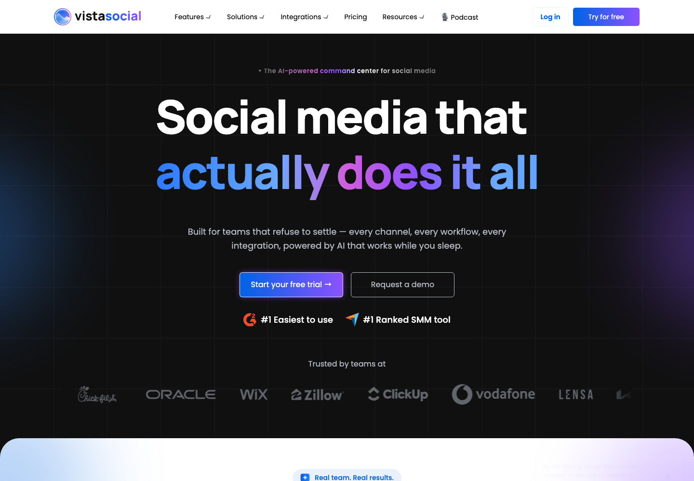
Scheduler / 社媒管理新兴工具竞品
Vista Social
打开官网 ↗ · SMB / agencies
定位：publishing、inbox、reviews、AI。
价格信号：低价多功能 SaaS
它赢：功能多，价格有竞争力。
它弱：容易成为复杂工具箱；本地行业策略不是核心。
对 LocalPilot：注意它的 reviews/inbox 一体化方向。
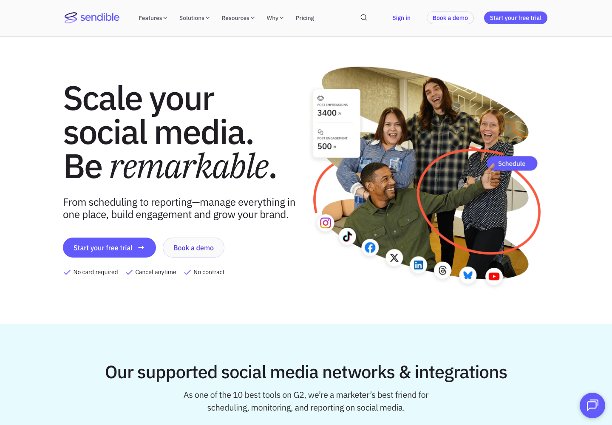
Scheduler / 社媒管理agency 竞品
Sendible
打开官网 ↗ · agencies / brands
定位：client social management platform。
价格信号：Creator/Traction/White Label 分层
它赢：agency 客户管理成熟。
它弱：老板自助使用门槛高；没有本地转化闭环。
对 LocalPilot：agency/white-label 是 post-PMF 方向。
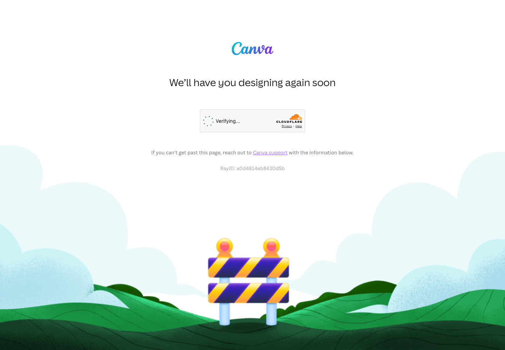
AI 创意 / 设计工具替代工作流
Canva
打开官网 ↗ · 所有 SMB / creators
定位：设计、模板、AI creative、部分 social publishing。
价格信号：Free + Pro/Teams
它赢：模板和视觉资产极强，用户心智强。
它弱：不是营销执行系统；需要用户自己知道做什么。
对 LocalPilot：可与 Canva 互补：LocalPilot 给策略与文案，Canva 处理视觉。
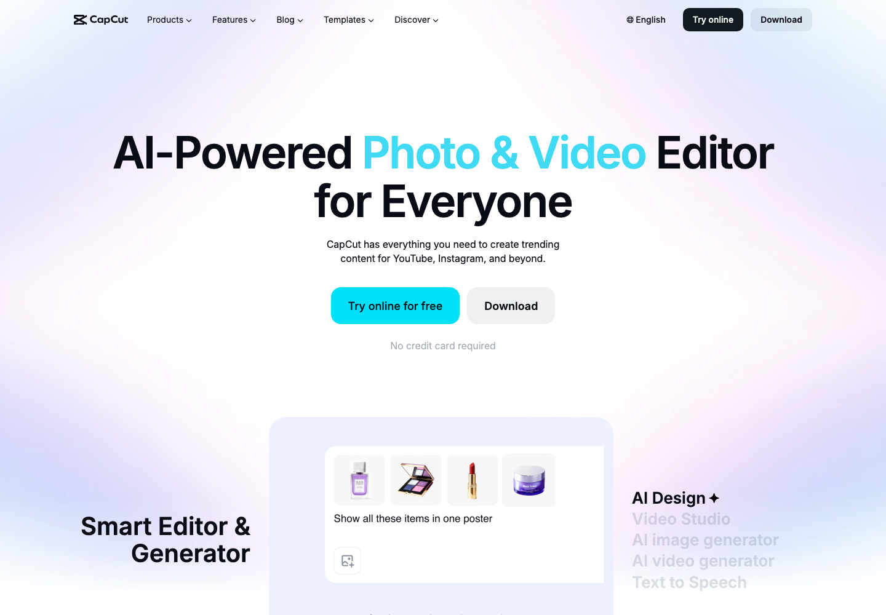
AI 创意 / 视频工具TikTok 视频替代工具
CapCut
打开官网 ↗ · short-video creators / SMB
定位：视频编辑、模板、字幕、TikTok-native creative。
价格信号：Free + Pro
它赢：短视频制作强。
它弱：不是发布与经营反馈系统。
对 LocalPilot：TikTok MVP 可先生成 script/shot list，视频制作可借助 CapCut。
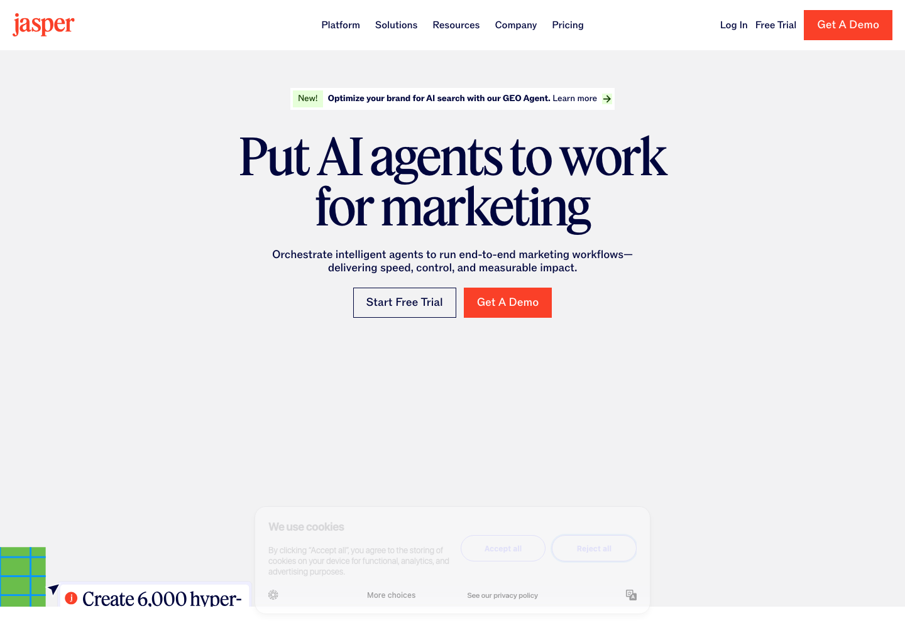
AI 内容生成AI copy incumbent
Jasper
打开官网 ↗ · marketing teams
定位：AI marketing copy platform。
价格信号：Creator/Pro/Business 分层
它赢：brand voice / campaign copy 强。
它弱：偏通用营销文案，不聚焦本地商家发布闭环。
对 LocalPilot：品牌语气学习可参考，但 LocalPilot 不应做纯 copywriting。
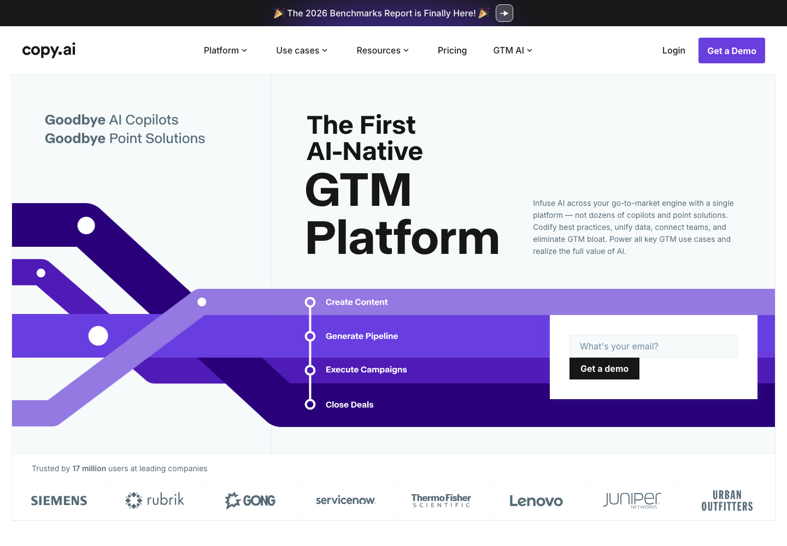
AI 内容生成AI GTM/workflow 工具
Copy.ai
打开官网 ↗ · GTM teams
定位：AI workflow / GTM automation / copy generation。
价格信号：Free + paid plans
它赢：workflow 自动化叙事强。
它弱：不聚焦 SMB social publishing。
对 LocalPilot：说明 AI workflow 是方向，但 LocalPilot 的 workflow 更窄更行业化。
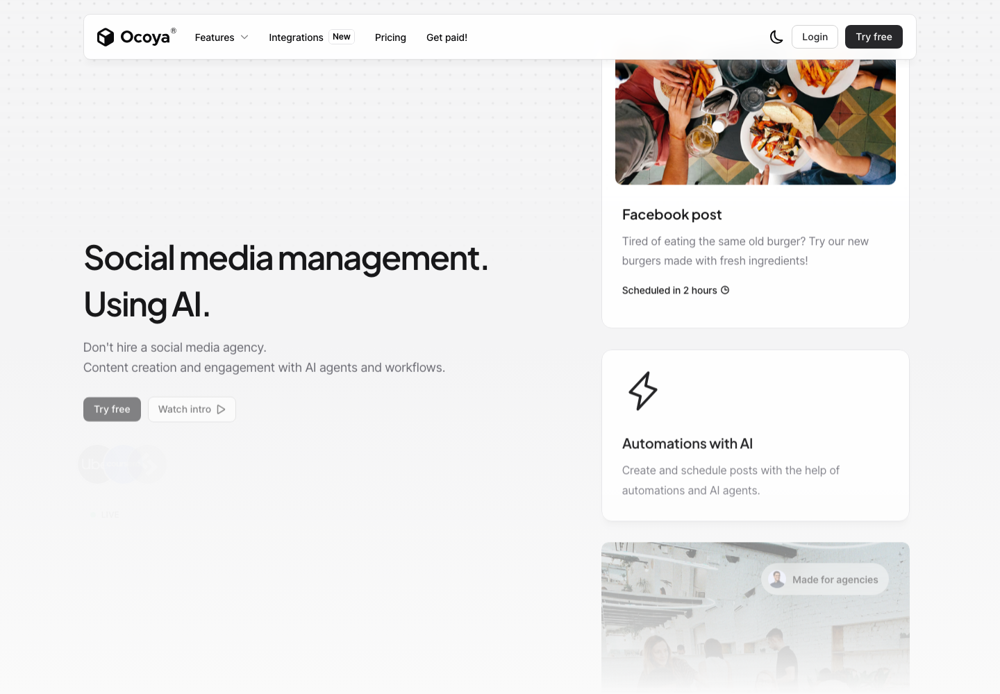
AI 内容生成直接相邻竞品
Ocoya
打开官网 ↗ · SMB / e-commerce / agencies
定位：AI content creation + scheduling + analytics。
价格信号：多档 subscription
它赢：和 LocalPilot 功能表相似。
它弱：仍偏 general social tool；本地 attribution 弱。
对 LocalPilot：需要重点观察。
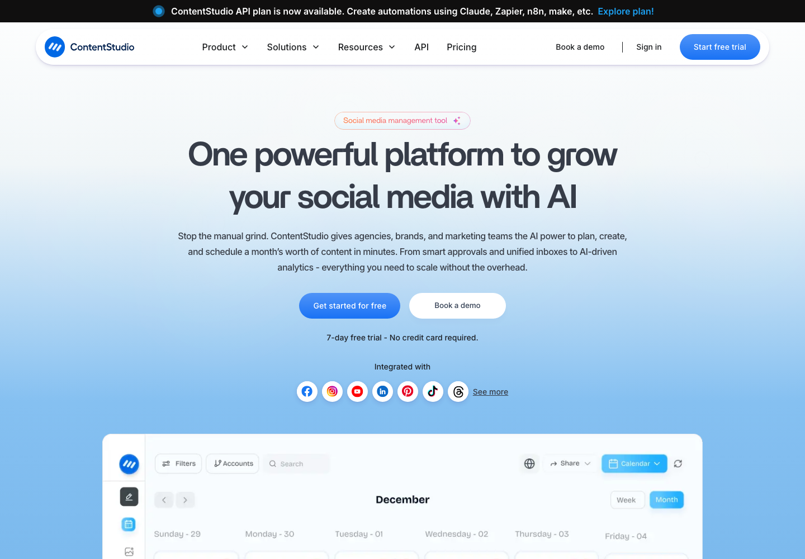
Scheduler / 社媒管理内容发现/管理竞品
ContentStudio
打开官网 ↗ · marketers / agencies
定位：content discovery、planning、publishing、analytics。
价格信号：Starter/Pro/Agency 分层
它赢：内容发现和 team workflow 强。
它弱：不是 owner-friendly operator。
对 LocalPilot：trend-to-action 可以借鉴，但必须行业化。

商家平台 / 小红书中国 SMB 对标
有赞 AI 内容创作
打开官网 ↗ · 中国商家 / 有赞店铺 / 小红书种草
定位：AI 多模板笔记生成、素材库、商品挂载、UGC 口碑、账号托管运营。
价格信号：有赞生态内；公开页面偏咨询/套餐
它赢：更接近“商家经营 + 内容自动化”；和商品/店铺/团购结合。
它弱：China/XHS/有赞生态绑定，不服务 US Facebook/TikTok 本地 SMB。
对 LocalPilot：证明商家内容自动化成立；但美国市场空位仍在。
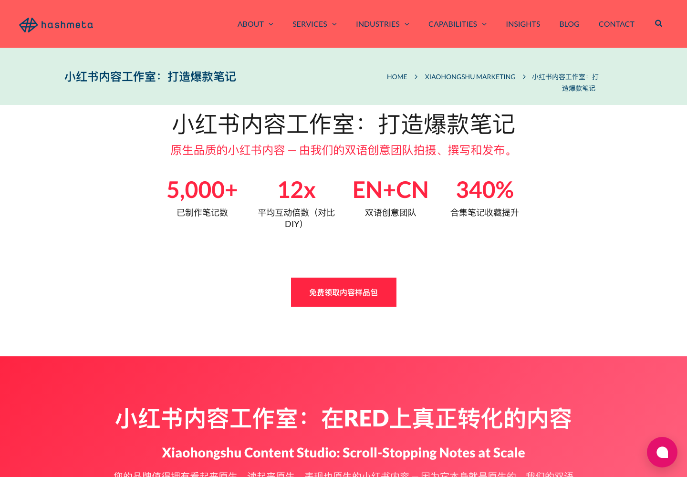
Agency / 小红书服务型替代品
Hashmeta 小红书内容服务
打开官网 ↗ · 想做小红书的品牌/商家
定位：小红书原生内容、关键词、封面、互动、监测、迭代。
价格信号：quote-based
它赢：懂 XHS 内容文化。
它弱：服务重、报价制、不是美国 SMB 自助工具。
对 LocalPilot：XHS 不是 Chinese Instagram；后续必须做 native note structure。
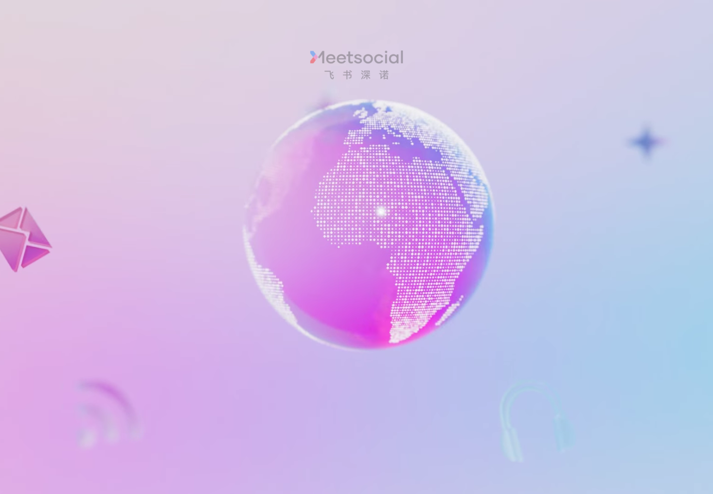
Agency / 跨境营销区域/文化营销参考
飞书深诺 MeetSocial
打开官网 ↗ · 跨境品牌 / 海外增长
定位：海外社媒、广告、达人、区域化增长。
价格信号：quote-based
它赢：跨文化投放和区域策略强。
它弱：agency 模式重，不适合单店 SMB。
对 LocalPilot：华人商家和本地化 copy 可以吸收其 regional segmentation 思路。

AI UGC / enterprise类别验证 + 未来威胁
Scale Social
打开官网 ↗ · multi-location brands / chains
定位：AI-powered UGC supply chain：顾客扫码录制真实体验，AI 生成广告并投放。
价格信号：Contact us
它赢：真实顾客内容绕开 AI spam 质疑；强调销售增长。
它弱：需要客流和 UGC 规模；单店 SMB 很难稳定供给。
对 LocalPilot：未来可做 review/testimonial-to-post，但 MVP 不做 UGC supply chain。

AI social engagement / enterprise资本验证
Nectar Social
打开官网 ↗ · enterprise brands
定位：AI social engagement、brand voice、real-time interaction intelligence。
价格信号：enterprise / demo
它赢：融资强、企业 engagement 场景强。
它弱：不解决本地商家今天发什么、怎么发、有没有客户。
对 LocalPilot：长期 comment/DM assistant 可参考；短期不是直接竞品。

Brand collision / local marketing品牌风险
Polsia LocalPilot
打开官网 ↗ · local business marketing
定位：名称冲突信号：LocalPilot 已被其他 local marketing product 使用。
价格信号：Starting at €149/mo（公开社交信号）
它赢：说明命名和定位可能撞车。
它弱：信息有限，需要持续追踪。
对 LocalPilot：外部 pilot 前建议改名或至少准备备选名。
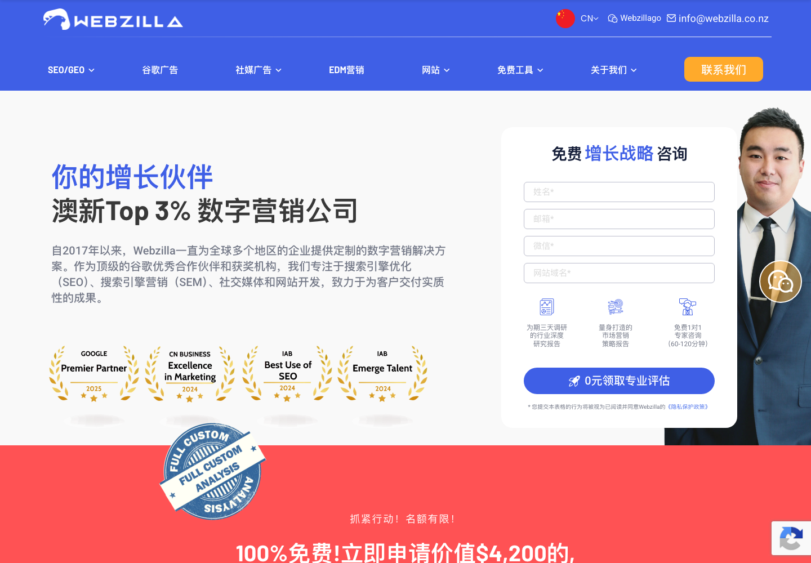
Agency / 全案营销服务型替代品
Webzilla
打开官网 ↗ · 需要外包营销的 SMB/品牌
定位：SEO/SEM/social ads/email/web development 全案服务。
价格信号：quote-based；agency retainer 常见 $500–$5k+/mo
它赢：信任、人工策略、执行完整。
它弱：贵、慢、不可 self-serve；SMB 很难长期负担。
对 LocalPilot：LocalPilot 价格应卡在工具和 agency 之间。